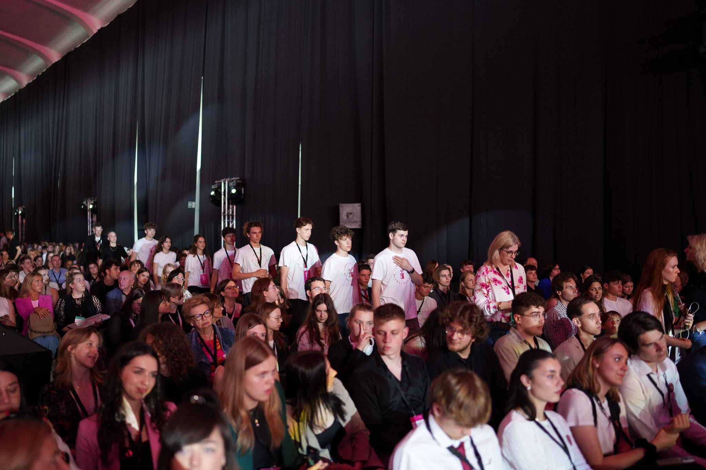

GŁOS
PRZYSZŁOŚCI
Społeczność młodych ludzi i dorosłych wspólnie działających na rzecz świadomości demokratycznej i obywatelskiej polskiej młodzieży.
Jesteśmy społecznością młodych Polaków, którzy wierzą, że świadomy obywatel zmienia rzeczywistość. Edukujemy, debatujemy i działamy — bo demokracja to nie tylko wybory.
Nasza misja ↓
Od małego projektu do ogólnopolskiej społeczności.
"Naszą misją jest aktywne uczestnictwo w tworzeniu społeczeństwa opartego na wartościach solidarności, innowacji, edukacji i zdrowia."
Każdy projekt, który realizujemy, wpisuje się w te wartości i przyczynia się do poprawy jakości życia społeczności.
Edukujemy i inspirujemy młodych Polaków do aktywnego uczestnictwa w życiu publicznym — rozumienia praw, mechanizmów demokracji i odwagi angażowania się w sprawy wspólnoty.
Wyobrażamy sobie Polskę, w której młodzi są naturalnymi uczestnikami życia demokratycznego — debatują, działają i kształtują przyszłość swoich społeczności.